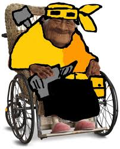

Sobre mí: hacia el 2036
Dentro de una década me visualizo como un ingeniero en software especializado en arquitectura front-end y experiencia de usuario, liderando proyectos tecnológicos de impacto social. Seré referente en mi comunidad, promoviendo la educación digital y la innovación.
Actualmente soy estudiante de Fundamentos Web, pero con disciplina y aprendizaje continuo, en 10 años habré consolidado mi propia startup o seré tech lead en una empresa internacional. La constancia y la pasión por el código me definirán.

Metas clave para los próximos 10 años
Formación avanzada
Terminar mi pregrado, especializarme con una maestría en Ingeniería de Software y certificaciones internacionales (AWS, Scrum, React).
Carrera profesional sólida
Ser desarrollador senior o arquitecto front-end en una empresa tecnológica líder, liderando equipos multidisciplinarios y proyectos innovadores.
Independencia y estabilidad
Alcanzar libertad financiera, invertir en bienes raíces y crear un emprendimiento tecnológico que genere empleo local.
Viajar & conocer el mundo
Explorar al menos 15 países, aprender nuevas culturas y participar en conferencias tech internacionales como speaker.
Hoja de ruta: evolución década
Años 1-3 (2026-2029)
Dominio completo de HTML5, CSS3, JavaScript y frameworks como React. Creación de proyectos freelance, primeros trabajos como desarrollador junior y fortalecimiento del inglés técnico.
Años 4-6 (2029-2032)
Especialización en backend (Node.js, Python) y cloud computing. Obtener certificaciones de arquitectura. Ascender a desarrollador full-stack y empezar a liderar equipos pequeños.
Años 7-9 (2032-2035)
Crecimiento hacia rol de Tech Lead / Engineering Manager. Lanzamiento de productos digitales propios, mentoría a nuevos talentos, maestría culminada y participación en comunidades tech.
Año 10 (2036)
Consolidación profesional: dirigir mi propia consultora o ser CTO de una empresa innovadora. Retribuir a la sociedad con proyectos de educación tecnológica gratuita.
Áreas de crecimiento personal
Visualizando el futuro

Innovación constante
Proyectos que transforman el mundo digital.

Conferencias internacionales
Compartiendo escenario con referentes tech.

Conociendo el mundo
Aprendizaje intercultural y nuevas perspectivas.
Contacto profesional futuro
Si compartes esta visión o quieres colaborar en proyectos a largo plazo, estos serán mis canales oficiales en 2036, aunque desde hoy ya puedes escribirme.
geovanny.brito@vision2036.com/in/geovannybrito-futuro
github.com/gbrito-future
Frase que me guía: "El mejor momento para plantar un árbol fue hace 10 años, el segundo mejor momento es hoy".
Déjame un mensaje (simulación)
*Este formulario usa método GET, los datos aparecerán en la URL de buscar.html